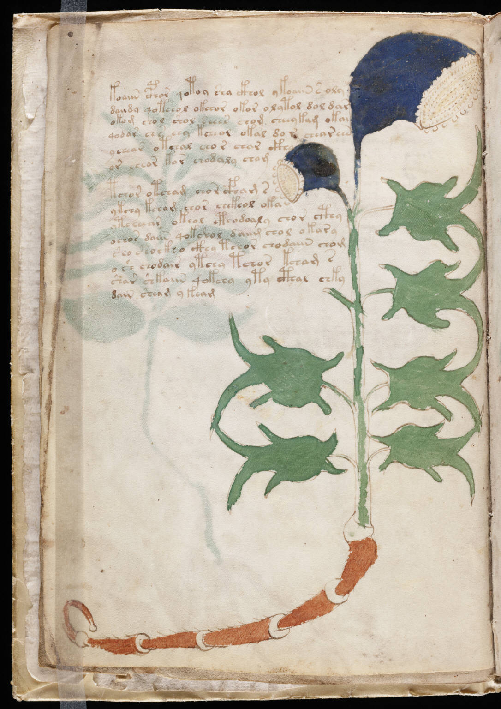

f3v
1koaiin cphor qotoy sha ckhol ykoaiin s oly2daiidy qoteeol okchor okor olytol dol dar3okom chol shol seees chom cheeykam okai4qodar ees eey kcheol okal do r chear een5yeeear otchal eeor eear ckhy6or cheor kor chodaly chom7tchor otcham chor cfham s8ykchy kchom chor chekeol oka9ytcheear okeol cthodoaly chor cthy10ochor daiin qokshol daiim chol okary11sho shockho ckhy tchor chodaiin chom12osh chodair ytchy tchor kcham s13shar shkaiin qokchy yty cthal chky14dain sheam yteam
